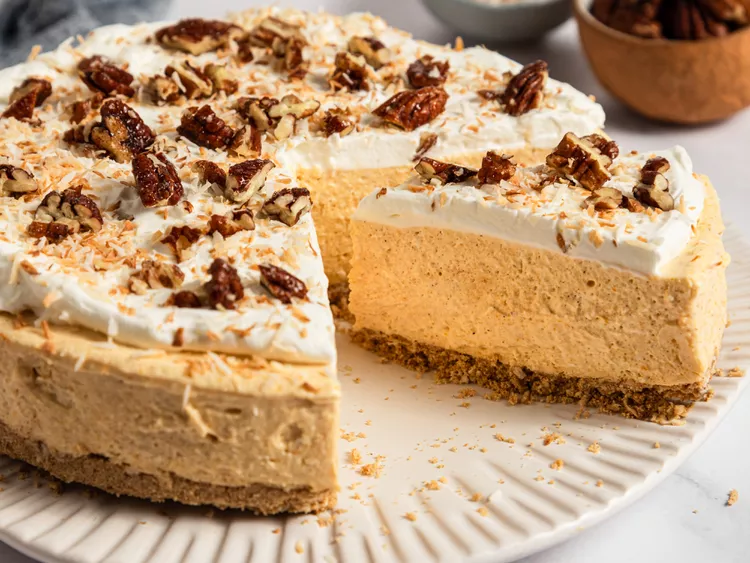

Home
No-Bake Carrot Cheesecake

Description
This no-bake carrot cheesecake is the perfect combination of carrot cake and
cheesecake with a graham cracker crust, a smooth, creamy carrot filling, and
topped with whipped cream, coconut, and pecans
Ingredients
- 4 medium carrots, peeled and sliced into 1/2-inch thick pieces
- 1 1/2 cups graham cracker crumbs
- 1 cup unsweetened shreeded coconut, toasted, plus more for garnish
- 6 tablespoons butter, melted
- pinch of salt
- 1 cup whipping cream
- 2 (8-ounce) packages cream cheese, softened
- 3/4 cup powdered sugar
- 6 tablespoons brown sugar, divided
- 1 teaspoon vanilla extract
- 1 teaspoon ground cinnamon
- 1/4 teaspoon ground ginger
- 1/4 teaspoon ground nutmeg
- 1/8 teaspoon salt
- candied pecans for garnish (optional)
- sweetened whipped cream for garnish (optional)